Không tự huấn luyện LLM từ đầu
Tài sản lõi là ontology, đồ thị tri thức, nền dữ liệu và bộ đề kiểm thử. Mô hình ngôn ngữ thay được mỗi 6–12 tháng.
Một lõi dùng chung cho công trường khép kín (1.1–4.2) và công trường tuyến (L1–L8). Phần triển khai, chi phí và lộ trình nằm ở cuối trang.
Tài sản lõi là ontology, đồ thị tri thức, nền dữ liệu và bộ đề kiểm thử. Mô hình ngôn ngữ thay được mỗi 6–12 tháng.
Mỗi phép đo dùng sản phẩm thương mại đã kiểm định. CC1 làm phần nối dữ liệu, đối chiếu và cảnh báo.
Thiết kế → dự toán → nhập về → thi công → nghiệm thu → thanh toán, nối bằng một ontology chung cho cả tập đoàn.
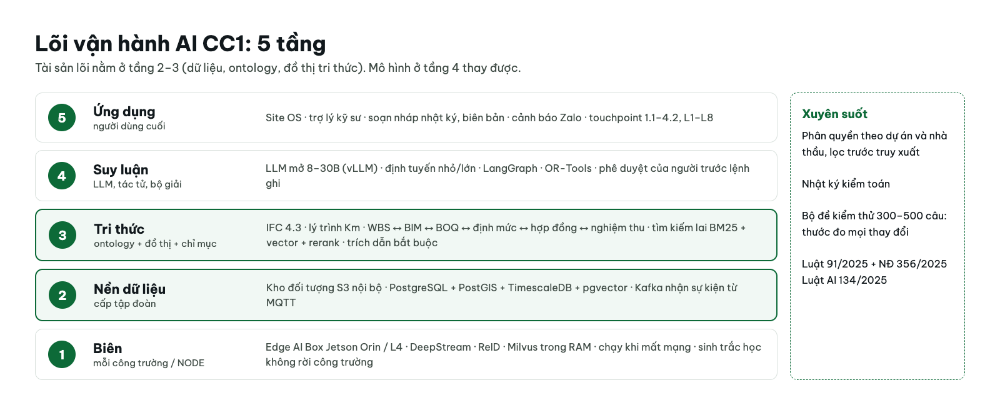
| Tầng | Vai trò | Công nghệ |
|---|---|---|
| 1. Biên | Thiết bị thu tại công trường, thị giác máy, chạy khi mất mạng | Camera, drone, trạm cân, cổng LiDAR, chip UWB, GNSS; Edge AI Box Jetson Orin / L4, DeepStream, Milvus trong RAM |
| 2. Nền dữ liệu | Lưu sự kiện, hồ sơ, mô hình 3D | Kho đối tượng S3 nội bộ (Garage hoặc Ceph), PostgreSQL + PostGIS + TimescaleDB, Kafka |
| 3. Tri thức | Ontology, đồ thị, chỉ mục hồ sơ | Neo4j hoặc Apache AGE, pgvector hoặc Qdrant, tìm kiếm lai BM25 + vector |
| 4. Suy luận | LLM, tác tử, bộ giải | LLM mở 8–30B (vLLM), LangGraph, OR-Tools, người phê duyệt lệnh ghi |
| 5. Ứng dụng | Người dùng cuối và thiết bị tại công trường | Site OS, trợ lý kỹ sư, nháp nhật ký và biên bản, cảnh báo Zalo; máy tính bảng, màn hình tại cổng, cổng xoay/barie, loa và đèn cảnh báo, vòng tay rung |
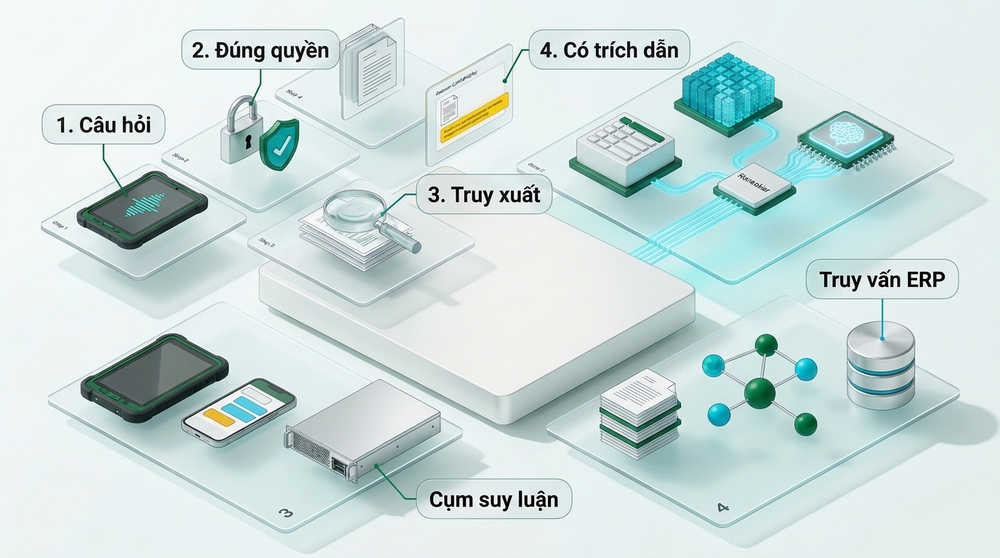
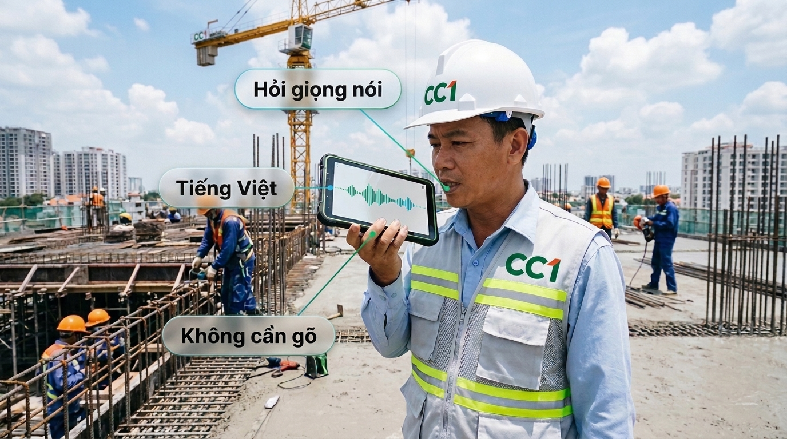
| Lựa chọn | Cần gì | Kết luận |
|---|---|---|
| Huấn luyện từ đầu | Hàng nghìn tỷ token, hàng chục nghìn giờ GPU trở lên | Không. Tiếng Việt ngành xây dựng chỉ cỡ vài trăm triệu token |
| Huấn luyện tiếp trên kho ngành | 0,5–2 tỷ token sạch, vài trăm giờ GPU | Chỉ khi bộ đề cho thấy hổng thuật ngữ |
| Tinh chỉnh hẹp (LoRA) | Vài nghìn mẫu do kỹ sư gán nhãn | Có: trích biên bản, BOQ, nhật ký |
| RAG + công cụ + ontology | Nền dữ liệu, chỉ mục, phân quyền | Bắt buộc, làm trước tiên |
Số liệu (khối lượng, dòng BOQ, điều khoản TCVN, lý trình) chỉ lấy từ hệ thống gốc và có trích dẫn. Mô hình đảm nhận ngôn ngữ, trích xuất và gọi công cụ.
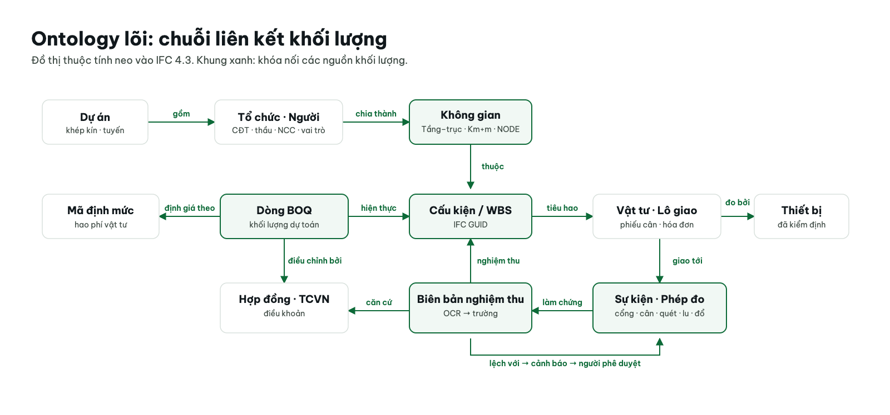
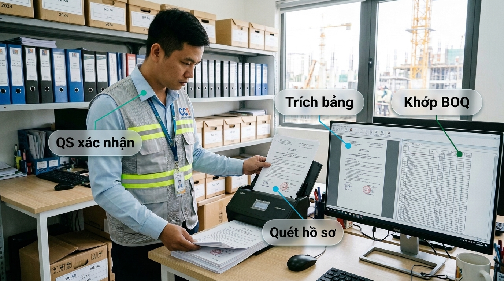
| Bẫy hồ sơ Việt Nam | Cách xử lý |
|---|---|
| File cũ dùng bảng mã TCVN3 (.VnTime) hoặc VNI | Nhận diện bảng mã, chuyển Unicode trước khi nạp |
| Unicode dựng sẵn và tổ hợp lẫn lộn | Chuẩn hóa NFC toàn bộ |
| Đơn vị viết nhiều kiểu (m³, khối, chữ hoa) | Bộ chuẩn hóa đơn vị dùng chung |
| Số thập phân dấu phẩy và dấu chấm lẫn nhau | Suy theo ngữ cảnh cột, kiểm tra phạm vi |
| Lý trình viết Km12+400, K12+400, Km 12 + 400 | Bộ phân tích lý trình quy về mét |
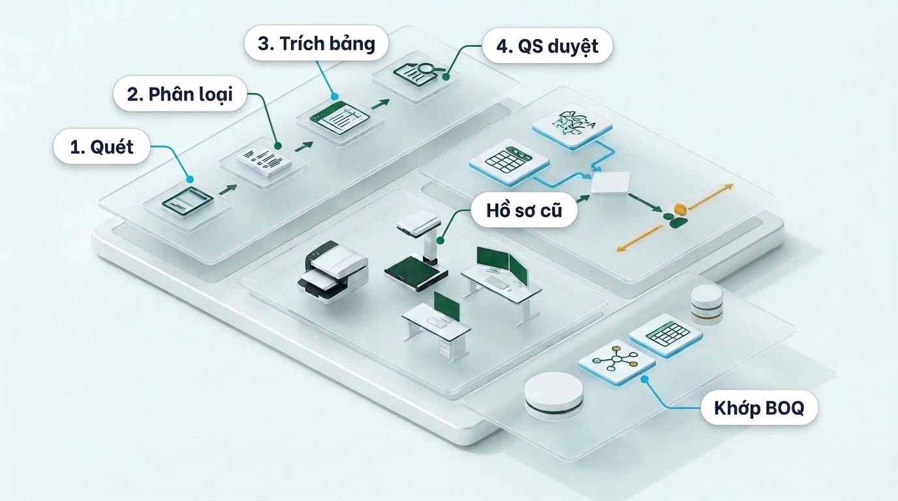
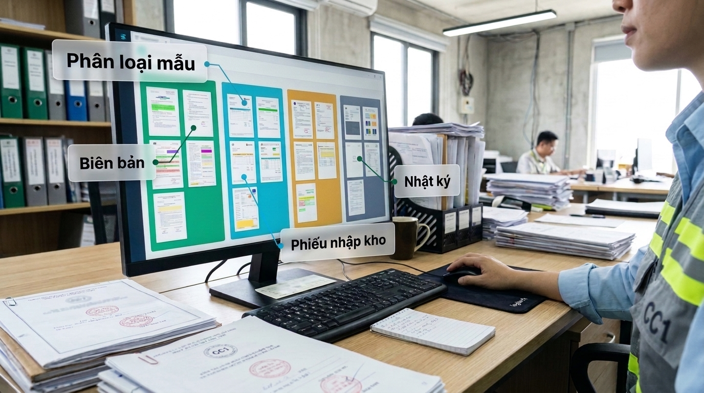
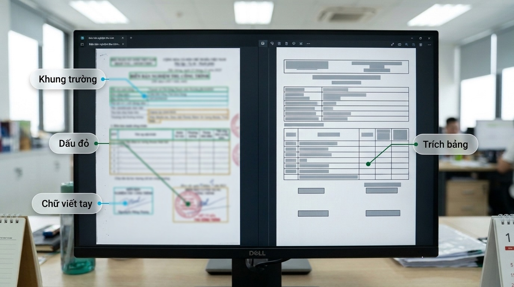
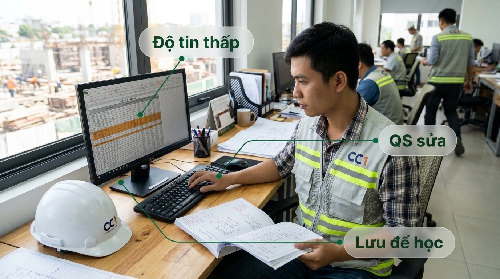
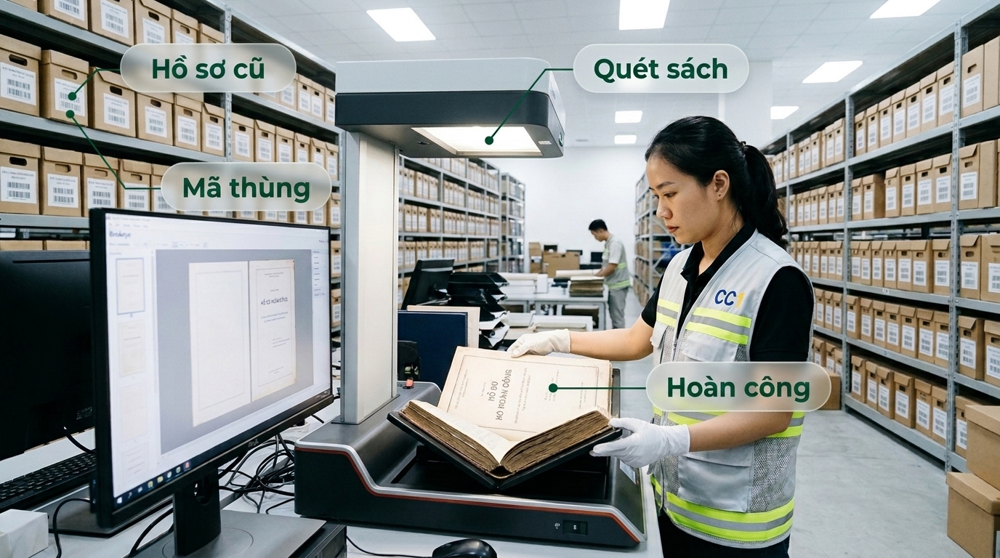
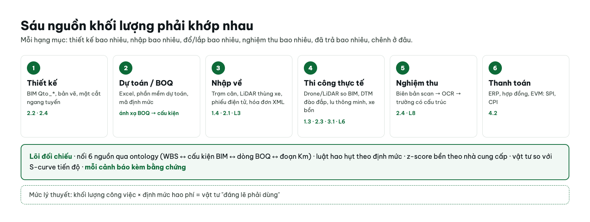
Thanh toán vẫn theo biên bản nghiệm thu. Lõi AI gắn cờ chênh lệch kèm bằng chứng, không tự sửa số.
| Bài toán | Thuật toán | Đầu ra |
|---|---|---|
| Đào đắp nền đường | Hiệu hai mô hình địa hình (TIN–TIN), đối chiếu mặt cắt theo lý trình | m³ đào/đắp theo đoạn Km |
| Tiến độ kết cấu | RTK, ghép đám mây điểm (ICP), lọc mặt đất (CSF), so BIM (C2M) | % hoàn thành từng cấu kiện |
| Thể tích thùng xe | Hiệu bản đồ độ cao thùng rỗng và đầy | m³ thực chở |
| Gian lận vật tư rời | Tỷ trọng = khối lượng cân / thể tích quét | Cờ cát ướt, chở thiếu |
| Bê tông, thép | Phiếu xe bồn, cân nhập so BIM và định mức hao hụt | Hao hụt theo hạng mục |
| Bất thường | Luật hao hụt, z-score bền, vật tư so S-curve, EVM | Cảnh báo kèm bằng chứng |
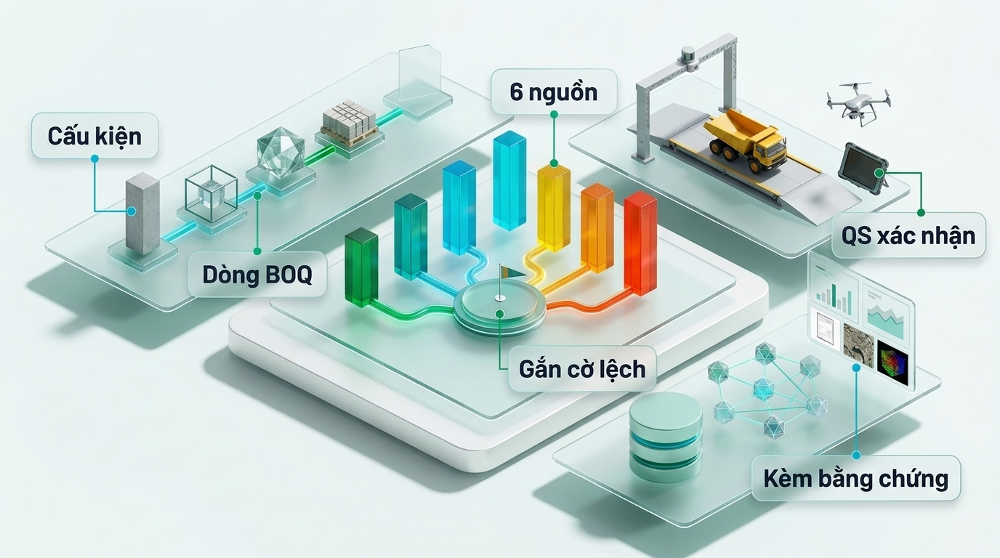
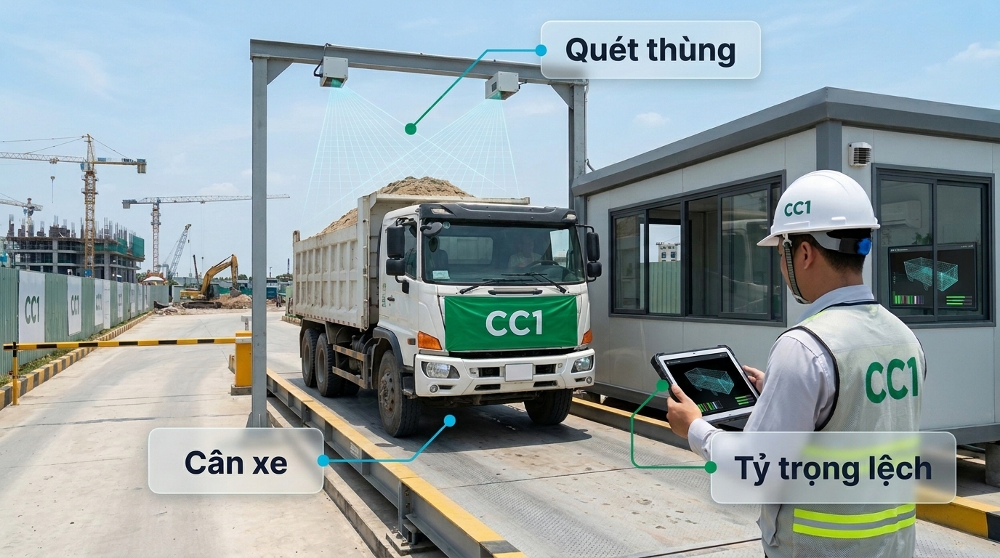
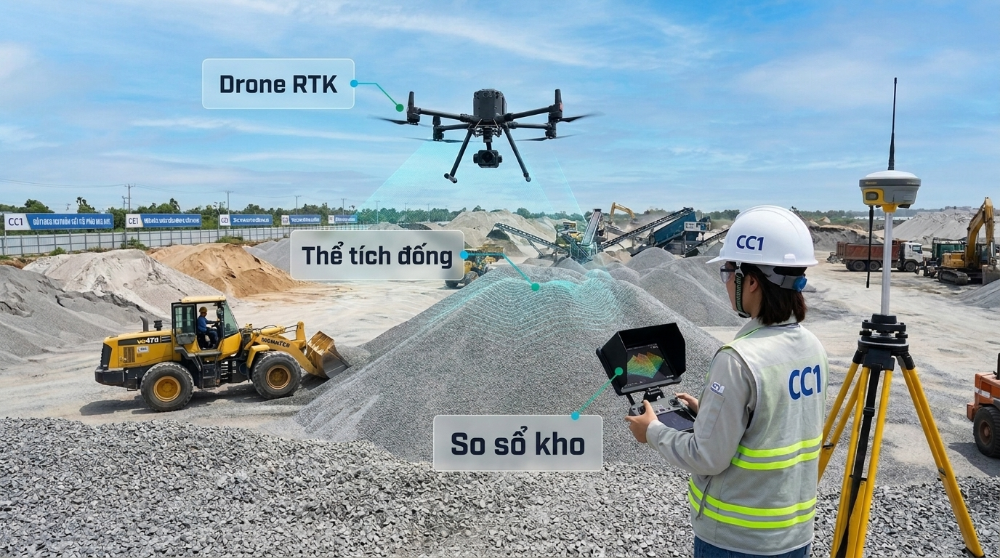
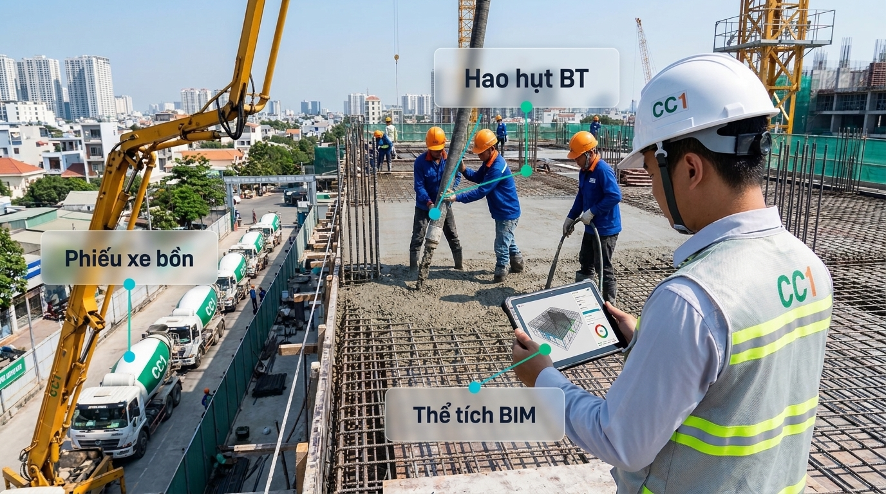
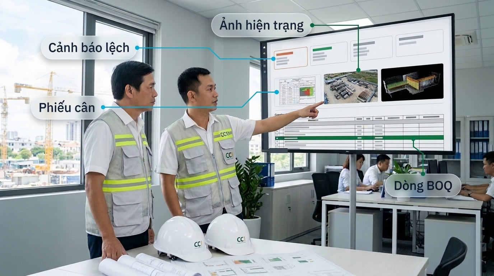
| Điểm chạm | Thuật toán chính | Độ chín | Ghi chú |
|---|---|---|---|
| 1.1 | Nhận diện khuôn mặt (ArcFace) + chống giả mạo; phát hiện PPE (YOLO) | Phổ biến | Cần đồng ý theo Luật 91/2025 |
| 1.2 | Phát hiện đối tượng + tư thế + bám vết (ByteTrack); lọc báo giả theo thời gian | Phổ biến | Báo giả là vấn đề chính |
| 1.3 | Dựng 3D từ ảnh (COLMAP, OpenDroneMap), RTK, so BIM | Phổ biến | Cần BIM sạch, đúng tọa độ |
| 1.4 | Nhận dạng biển số Việt Nam 1 dòng và 2 dòng | Phổ biến | Đặt camera đúng góc cho biển bẩn |
| 1.5 | ReID ngoại hình, dáng đi, khung xương 3D, UWB; lọc Kalman + ghép Hungarian | Nghiên cứu | UWB là nguồn chính, thị giác bổ trợ |
| 2.1 | Thể tích LiDAR + cân + tỷ trọng | Thí điểm | Hiệu chuẩn theo loại thùng xe |
| 2.2 | Robot in sàn định vị bằng máy toàn đạc | Thí điểm | Mua sản phẩm thương mại |
| 2.3 | Dẫn hướng máy xúc GNSS RTK + IMU | Phổ biến | Mua bộ của hãng |
| 2.4 | AR: SLAM LiDAR, đăng ký mô hình BIM | Thí điểm | Sai số đăng ký là rủi ro chính |
| 3.1 | Robot bốn chân: SLAM LiDAR, ảnh nhiệt | Thí điểm | Mua nền tảng, CC1 làm phân tích |
| 3.2 | Khung xương trợ lực | Thí điểm | Không phải bài toán AI |
| 3.3 | Máy tự hành: lập đường phủ kín, tránh va chạm nhiều xe | Nghiên cứu | Hoãn đến khi có đối tác hãng máy |
| 3.4 | Chống lắc tải (input shaping, MPC), phát hiện người dưới tải | Thí điểm | Điều khiển cẩu qua hãng cẩu |
| 3.5 | Tác tử LLM + đường găng (CPM) + bộ giải lập lịch (OR-Tools) | Thí điểm | Bộ giải quyết định, LLM đề xuất |
| 4.1–4.2 | Nhà máy vi mô, hợp đồng thông minh | Tầm nhìn | Ngoài lõi năm 1–2 |
| Điểm chạm | Thuật toán chính | Độ chín | Ghi chú |
|---|---|---|---|
| L1 | Phát hiện biển báo, rào chắn; đối chiếu danh mục QCVN 41:2024 | Thí điểm | Danh mục số hóa là phần chính |
| L2 | Geofence theo đoạn Km; điểm danh QR/NFC | Phổ biến | Không cần AI |
| L3 | Geofence điểm đổ, phiếu điện tử | Phổ biến | Không cần AI |
| L4 | Bám vết radar + thời gian tới va chạm (TTC) | Thí điểm | Báo giả do xe máy lách |
| L5 | Tham chiếu tuyến tính: GPS → lý trình + độ lệch | Phổ biến | Xương sống dữ liệu tuyến |
| L6 | Lu thông minh (chỉ số CMV), dải nhiệt thảm nhựa | Phổ biến | Dữ liệu từ thiết bị hãng |
| L7 | Phát hiện bất động, ngã từ gia tốc kế; LoRa/4G | Phổ biến | Không cần AI nặng |
| L8 | Độ chín bê tông (Nurse-Saul, ASTM C1074); hình học đốt dầm | Phổ biến | Hiệu chuẩn theo cấp phối thật |
Ba chỗ cần thận trọng khi trình bày: 1.5 (công nhân mặc đồng phục giống nhau), 3.3 (máy tự hành), L4 (báo giả do xe máy).
| Lớp | Công nghệ | Vai trò |
|---|---|---|
| Tại cổng | Khuôn mặt + chống giả mạo; thẻ cho người không đồng ý sinh trắc | Xác nhận đầu ca, ghép với chip UWB trên mũ |
| Trong ca, khép kín | UWB: chip trên mũ, trạm neo | Nguồn định danh và vị trí chính |
| Trong ca, tuyến | Thẻ GNSS + LoRa/4G | UWB không phủ được hàng chục km |
| Thị giác | Bám vết trong camera, số in trên mũ/áo | Bổ trợ, phát hiện người không mang chip |
| Chống tráo mũ | So vị trí chip với vệt người trên camera | Gắn cờ cho người kiểm tra |
Bảng dưới gọi tên cụ thể thiết bị, phần mềm và mô hình cho từng khối của lõi. Đây là danh sách ứng viên để lấy báo giá và đưa vào vòng thi đấu bộ đề, chưa phải quyết định mua. Mô hình chỉ chốt sau khi chạy bộ đề. Giá là giá niêm yết công khai ở nước ngoài, ghi kèm ngày và nguồn; chưa gồm thuế nhập khẩu, VAT, vận chuyển, lắp đặt; không thay số ngân sách ở phần chi phí. Đối chiếu ngày 31/10/2026.
| Câu hỏi | Trả lời |
|---|---|
| Chụp tại hiện trường bằng gì? | Máy tính bảng công nghiệp Samsung Galaxy Tab Active5 Pro (QS, giám sát) và điện thoại Galaxy XCover7 Pro (tổ trưởng). App CC1 dùng bộ chụp tài liệu sẵn của hệ điều hành (VisionKit trên iOS, ML Kit Document Scanner trên Android) để cắt trang, kéo phẳng ngay trên máy. Ảnh gửi về cụm trong nước, không qua dịch vụ OCR đám mây nước ngoài. |
| Máy scan nào? | Ricoh fi-8190 tại mỗi ban chỉ huy (90 trang/phút, khay 100 tờ). Ricoh fi-8950 tại trụ sở để quét tập trung hồ sơ A3/A4. CZUR ET24 Pro cho sổ nhật ký, hợp đồng đóng cuốn. Colortrac SmartLF Scan 36 cho bản vẽ rời khổ A0. |
| Back end xử lý thế nào? | App hoặc máy scan đẩy file lên API nội bộ (FastAPI) → file vào kho đối tượng trong nước → hàng đợi việc → máy chủ GPU chạy mô hình OCR qua vLLM → kết quả JSON được kiểm theo lược đồ → ô có độ tin thấp vào màn hình duyệt (Label Studio) cho QS → bản đã duyệt ghi vào PostgreSQL và nối vào ontology, BOQ. Toàn bộ chạy trên cụm suy luận đặt tại trung tâm dữ liệu thuê trong nước. |
| Mô hình nào? | Docling cho PDF đã có lớp chữ. PaddleOCR-VL-1.6 (0,9 tỷ tham số) cho trang scan, bảng, con dấu. PP-OCRv5 với từ điển tiếng Việt cho dòng chữ in. VietOCR cho chữ viết tay. Qwen3-VL-8B để trích trường ra JSON khi biểu mẫu khó. |
| Huấn luyện hay dùng lại? | Dùng lại mô hình mở, không huấn luyện từ đầu. Bước đầu chạy nguyên bản và đo tỷ lệ lỗi ký tự trên 200 trang hồ sơ CC1. Chỉ tinh chỉnh chỗ lỗi cao: VietOCR với khoảng 2.000–5.000 dòng viết tay đã cắt; LoRA trích trường với khoảng 1.000–5.000 trang đã gán ô [I]. Mỗi lần QS sửa một ô thành một mẫu huấn luyện. |
Nhãn trong mục này: [F] đã mở trang gốc kiểm tra · [V] số nhà sản xuất tự công bố · [S] đại lý hoặc trang tổng hợp · [I] suy luận của nhóm tư vấn.
| Thiết bị | Đặt ở đâu | Thông số chính | Giá tham khảo | Ghi chú |
|---|---|---|---|---|
| Ricoh fi-8190 | Mỗi ban chỉ huy | 90 trang/phút, 180 mặt/phút, khay 100 tờ, tới 13.000 tờ/ngày, USB + mạng LAN [F] | 1.784 USD (CDW, 24/10/2026) [S] | Rẻ hơn: Canon DR-S150, 45 trang/phút, từ 967 USD [V] |
| Ricoh fi-8950 | Trụ sở, quét tập trung | 150 trang/phút, khổ A3, khay 750 tờ, tới 130.000 tờ/ngày [V] | 13.260 USD (CDW, 29/10/2026) [S] | Rẻ hơn: Canon DR-G2140, 140 trang/phút, khoảng 7.806 USD [S] |
| CZUR ET24 Pro | Trụ sở hoặc luân chuyển | Máy quét sách 24 MP, tới A3, khoảng 1–1,5 giây/trang [S] | khoảng 615 USD (10/2026) [S] | Cho sổ, hợp đồng đóng cuốn. Không đạt chuẩn ảnh lưu trữ |
| Zeutschel OS Q2 | Trụ sở, chỉ khi cần ảnh chuẩn lưu trữ | Khổ A2, tới 600 ppi, sách dày tới 150 mm [V] | chưa xác minh | Chỉ mua nếu số hóa hồ sơ cũ cần chuẩn lưu trữ |
| Colortrac SmartLF Scan 36 | Trụ sở | Bản vẽ rời rộng 914 mm (A0), 600 dpi, khoảng 7 kg [S] | 2.390 EUR chưa VAT (Áo, 10/2026) [S] | Không quét được tập đóng gáy |
| Samsung Galaxy Tab Active5 Pro 5G | QS, giám sát | 10,1 inch, IP68, MIL-STD-810H, 5G [S] | khoảng 1.044 USD (29/10/2026) [S] | Chụp biên bản, xem trợ lý, nhận cảnh báo |
| Samsung Galaxy XCover7 Pro | Tổ trưởng | IP68, MIL-STD-810H, pin tháo được [S] | khoảng 600 USD (08/2026) [S] | Chụp phiếu và ảnh hiện trường |
| Việc | Phần mềm / mô hình | Giấy phép | Dùng nguyên hay tinh chỉnh |
|---|---|---|---|
| PDF đã có lớp chữ | Docling | MIT [F] | Dùng nguyên, chạy trên CPU |
| Trang scan, bảng, con dấu | PaddleOCR-VL-1.6, 0,9 tỷ tham số, trong bộ PaddleOCR 3.7.0 (06/2026) | Apache-2.0 [F] | Dùng nguyên. LoRA chỉ khi lỗi trên 200 trang CC1 còn cao |
| Tọa độ ô bảng | PP-StructureV3 (trong PaddleOCR) | Apache-2.0 | Dùng nguyên |
| Dòng chữ in tiếng Việt | PP-OCRv5 với từ điển vi_dict.txt | Apache-2.0 | Có model tiếng Việt sẵn hay phải huấn luyện đầu nhận dạng: chưa xác minh. Nếu phải huấn luyện: 300–1.000 trang mỗi loại phiếu [I] |
| Chữ viết tay (nhật ký) | VietOCR | Apache-2.0 | Tinh chỉnh với 2.000–5.000 dòng viết tay CC1 (khoảng 200–500 trang) [I] |
| Trích trường ra JSON theo lược đồ | Qwen3-VL-8B-Instruct | Apache-2.0 [S] | Dùng nguyên; LoRA khi JSON sai, 1.000–5.000 trang đã gán ô [I] |
Không chọn:
Chưa có số đo công khai nào về độ chính xác dấu tiếng Việt trên biên bản, nhật ký, phiếu cân. Thứ tự đo trên 200 trang CC1: PaddleOCR-VL-1.6, PP-OCRv5 với từ điển tiếng Việt, VietOCR đã tinh chỉnh. Tốc độ (trang/giờ) của PaddleOCR-VL-1.6 cũng phải đo trên đúng GPU của cụm trước khi cam kết thời gian số hóa.
| Khâu | Phần mềm | Chạy ở đâu |
|---|---|---|
| Nhận file | FastAPI (MIT) | Cụm suy luận |
| Kho file | Garage (AGPL-3.0) hoặc Ceph. Không dùng MinIO bản cộng đồng: kho mã đã đóng, chỉ đọc từ 25/04/2026 [F] | Trung tâm dữ liệu trong nước |
| Hàng đợi, việc dài có bước người duyệt | Temporal (MIT); hoặc hàng đợi ngay trong PostgreSQL khi tải nhỏ | Cụm suy luận |
| Máy chạy mô hình | vLLM (Apache-2.0) phục vụ PaddleOCR-VL-1.6; lô lớn chạy ban đêm | 1 GPU của cụm suy luận |
| Kiểm kết quả | JSON Schema sinh từ ontology + Pydantic; sai lược đồ thì không ghi | Cùng API |
| Màn hình duyệt và gán nhãn | Label Studio (Apache-2.0) | Cụm suy luận |
| Ghi nghiệp vụ | PostgreSQL + PostGIS + TimescaleDB | Cụm suy luận |
| Khối | Ứng viên | Giấy phép | Dùng nguyên hay tinh chỉnh |
|---|---|---|---|
| Mô hình trả lời | Qwen3.6-27B (đọc được cả ảnh, ngữ cảnh 262.144 token) [F]; Gemma 4 31B và 26B A4B [V] | Qwen: Apache-2.0 [F]; Gemma 4: Apache-2.0 [S] | Thi đấu trên bộ đề; bên thắng được tinh chỉnh LoRA (giai đoạn 7) |
| Embedding | Qwen3-Embedding-4B; bge-m3 làm phương án đối chứng | Apache-2.0 / MIT | Dùng nguyên, rồi tinh chỉnh trên 20–50 nghìn cặp hỏi–đoạn hồ sơ [I] |
| Xếp hạng lại | Qwen3-Reranker-0.6B; lên 4B nếu bộ đề không tăng | Apache-2.0 | Dùng nguyên |
| Tách từ tiếng Việt cho tìm từ khóa | underthesea | Apache-2.0 | Dùng nguyên |
| Kho vector | pgvector trong PostgreSQL; Qdrant khi lọc nặng | PostgreSQL License / Apache-2.0 | Dưới 30 dự án chưa cần kho vector riêng [I] |
| Tìm từ khóa (mã định mức, số hiệu TCVN) | OpenSearch | Apache-2.0 | Dùng nguyên |
| Phục vụ mô hình | vLLM; SGLang nếu đo được nhanh hơn trên đúng GPU | Apache-2.0 | Dùng nguyên |
| Kênh người dùng | Web nội bộ + Zalo OA | — | Mô hình chạy ở cụm, không cài lên điện thoại |
Đường truy xuất tự viết: lọc quyền → tìm từ khóa + vector → xếp hạng lại → trả lời kèm trích dẫn. Số liệu khối lượng, chi phí luôn lấy qua truy vấn ERP, không để mô hình tự sinh.
| Khối | Ứng viên | Ghi chú |
|---|---|---|
| Lược đồ | LinkML | Viết lược đồ CC1 một lần, sinh JSON Schema cho OCR và API |
| Đồ thị | Apache AGE trên PostgreSQL | Cùng máy chủ với hồ sơ và vector. Neo4j Community (GPLv3) là phương án thay |
| Đọc BIM IFC 4.3 | IfcOpenShell (LGPL-3.0) | Lấy GUID và cấu kiện vào đồ thị |
| Đọc tuyến LandXML | Bộ đọc tự viết | Chỉ cần lý trình Km+m |
| Bản vẽ DWG | ODA File Converter sang DXF, rồi ezdxf | Hoặc yêu cầu đơn vị thiết kế nộp DXF/IFC |
| Ánh xạ BOQ sang mã định mức | Tra mã đã biết → tìm từ khóa + embedding → QS xác nhận | Không tinh chỉnh LLM cho tới khi có 5–20 nghìn dòng QS đã chốt [I] |
| Thiết bị | Vai trò | Thông số chính | Giá tham khảo | Ghi chú |
|---|---|---|---|---|
| DJI Matrice 4E | Ảnh RTK mặt bằng, đống vật liệu, đắp | 1.219 g, bay 49 phút, RTK 1 cm + 1 ppm ngang [F] | 5.189–5.499 USD (10/2026) [S] | Dưới 2 kg nhưng vẫn cần giấy phép bay theo Nghị định 288/2025/NĐ-CP |
| DJI Matrice 400 + Zenmuse L2 hoặc L3 | LiDAR hành lang tuyến, taluy, cầu có cây | M400 IP55, tải tới 2,1 kg; L3 tới 16 xung, 3–4 cm @120 m [V] | M400 10.450 USD; L2 khoảng 14.400 USD; L3 17.400 USD [S] | Chỉ cho dự án tuyến, không mua cho mọi công trường |
| DJI Terra / PIX4Dmatic / Agisoft Metashape | Ghép ảnh, đám mây điểm, tính thể tích | — | Terra từ 1.680 USD/năm [S]; PIX4Dmatic 2.290–4.990 USD/năm [V]; Metashape Pro khoảng 3.499 USD một lần [S] | WebODM tự chạy nếu không muốn ảnh rời khỏi máy chủ CC1 |
| Leica BLK360 G2 | Quét trong nhà, MEP, so lệch BIM | 4 mm @10 m, 680.000 điểm/giây, 0,85 kg [S] | khoảng 28.700 USD (10/2026) [S] | — |
| Leica RTC360 | Kết cấu, nhà cao, cầu | Tới 130 m, 2 triệu điểm/giây [V] | từ 82.936 USD (shop Leica) [V] | FARO Focus Premium là phương án thay |
| Emesent Hovermap ST-X | Hầm, gầm cầu, chỗ người không đứng được | SLAM, IP65, ±10–15 mm [V] | chưa xác minh | — |
| Loadscan | Thể tích thùng xe tại cổng | LiDAR, hãng công bố ±1%; có chứng nhận đo lường ở Úc, New Zealand, Mỹ [V] | chưa xác minh | Tại Việt Nam dùng để giám sát; số tấn vẫn lấy từ cân đã kiểm định |
| Cân xe công trường | Số tấn vật tư rời | Cân đã kiểm định đo lường | chưa xác minh | Tỷ trọng = tấn cân / m³ quét |
| VNGEONET | Hiệu chỉnh RTK cho drone, rover, máy thi công | Mạng trạm CORS quốc gia | 750.000 VND/máy thu/tháng; 6.750.000 VND/máy thu/năm [F] | Thuê bao trước, chỉ mua trạm base riêng ở vùng mất sóng |
| CloudCompare, PDAL, Open3D | So lệch đám mây điểm với BIM tự động | Mã mở | 0 | Nối vào kho đối tượng, không khóa hãng |
| Thiết bị | Vai trò | Giá tham khảo | Ghi chú |
|---|---|---|---|
| Trimble Earthworks / Leica MC1 / Topcon MC-Max | Dẫn hướng 3D máy đào, ủi, san, lu theo mặt thiết kế | khoảng 45.000–80.000 USD/máy 3D [S]; Topcon kit máy đào 29.750 GBP [S] | Chỉ cho dự án tuyến mẫu; điều kiện là xuất được tệp hoàn công về lõi |
| Giatec SmartRock | Nhiệt độ, độ chín, ước cường độ bê tông | chưa xác minh | Không dây, gắn vào thép trước khi đổ |
| Command Center | Cùng việc, có dây | từ 49 USD/cảm biến [V] | Cường độ cho nghiệm thu vẫn theo phòng thí nghiệm; cảm biến dùng để quyết định thời điểm tháo ván khuôn |
| Thiết bị | Vai trò | Thông số chính | Giá tham khảo |
|---|---|---|---|
| Hanwha PNV-A9081R | Camera cố định: cổng, hàng rào, sàn | 4K 30 fps, AI phân loại người/mặt/xe/biển số trên máy, ONVIF [V] | chưa xác minh |
| Axis Q1656-DLE | Vành đai ban đêm | Camera + radar, giảm báo động giả [V] | chưa xác minh |
| Axis Q6358-LE | PTZ trên nóc lán, bãi rộng | 4K, zoom quang 31×, tự bám mục tiêu [V] | chưa xác minh |
| Trailer camera năng lượng mặt trời 4G | Điểm nóng trên tuyến: bãi máy, nút giao | Pin mặt trời + ắc quy, không cần kéo điện [S] | 18.500–22.000 USD chưa gồm camera (08/2026) [S] |
| NVIDIA Jetson AGX Orin 64GB, hộp công nghiệp (Aetina, Advantech) | Máy biên tại lán: bảo hộ lao động, người lạ, biển số | 275 TOPS; khoảng 4 luồng 1080p30 với mô hình phát hiện người PeopleNet [I] | Bộ phát triển 3.499 USD [V]; hộp công nghiệp chưa xác minh |
| Jetson Thor T5000 | Bãi đúc, trạm trộn, nhiều camera một chỗ | 128 GB; khoảng 11 luồng cùng giả định [I] | chưa xác minh |
Điều kiện chọn camera: luồng RTSP nội bộ, tắt dịch vụ đám mây của hãng, vector khuôn mặt chỉ nằm ở biên. Dòng camera phổ thông có cloud hãng bắt buộc không đưa vào hệ mới.
| Thiết bị | Vai trò | Thông số chính | Giá tham khảo |
|---|---|---|---|
| Sewio RTLS: trạm neo + thẻ Leonardo | Vị trí trong công trường khép kín, sàn, hầm | Tối thiểu 4 neo mỗi vùng, tầm 15–50 m; môi trường công nghiệp khoảng dưới 1 m, khoảng 30 cm ở độ tin cậy cao [V] | chưa xác minh |
| Litum (thẻ gắn mũ) | Có mặt trong hầm, báo sự cố | Neo khoảng mỗi 100 m dọc hầm [V] | chưa xác minh |
| Blackline G7c | Người làm việc đơn độc trên tuyến: ngã, bất động, SOS | 4G, GNSS sai số 5 m, cập nhật mặc định 5 phút, IP67 [V] | chưa xác minh |
Số neo phỏng tính cho sàn kín khoảng 3.000 m²: khoảng 16 neo [I]. Thép và bê tông làm giảm độ chính xác so với số hãng công bố; phải đo tại công trường mẫu.
| Thiết bị | Vai trò | Thông số chính | Giá tham khảo |
|---|---|---|---|
| Suprema FaceStation F2 | Cổng người chính, đối soát thầu phụ | 50.000 mặt, IP65, −20 đến 50°C [V] | 62.000.000 VND (cửa hàng Việt Nam, không ghi ngày) [S] |
| ZKTeco SpeedFace-V5L | Cổng phụ, chấm công ca | 6.000–10.000 người (hai đại lý ghi khác nhau) [S] | 6,6–10,7 triệu VND [S] |
| Cổng xoay có cổng Wiegand | Làn người sau máy nhận mặt | — | chưa xác minh |
| Camera ANPR chuyên dụng | Biển số xe tải tại cổng vật tư | — | chưa xác minh |
| Khối | Ứng viên | Thông số chính | Giá tham khảo |
|---|---|---|---|
| Cụm suy luận: 2 node × 8 GPU 96 GB | NVIDIA RTX PRO 6000 Blackwell Server Edition trong vỏ Supermicro 8 GPU | 96 GB GDDR7/GPU, tối đa 600 W/GPU [F] | chưa xác minh |
| Phương án thay cho cụm suy luận | NVIDIA H200 NVL | 141 GB HBM3e/GPU [V] | chưa xác minh |
| Cụm huấn luyện sau cổng G2 | 8× B200 làm mát gió (Dell PowerEdge XE9780, Lenovo SR680a V3) | DGX B200 tham chiếu: tối đa 14,3 kW/node [V] | Liên hệ hãng |
| Thuê GPU 3 tháng đầu | FPT AI Factory, Viettel | H100/H200, dữ liệu ở Việt Nam | Xem cụm GPU |
| Chỗ đặt máy | Viettel IDC, FPT, VNPT, CMC | 1 node 8 GPU tiêu thụ khoảng 6,5–14 kW [S]/[V] | Gói công bố của Viettel IDC chỉ tới 1.500 W/10U [V]; giá tủ mật độ cao chưa xác minh |
| Kho đối tượng | Garage hoặc Ceph, ổ NVMe | — | — |
| Khối | Ứng viên | Giấy phép |
|---|---|---|
| SFT LoRA, DPO, GRPO | TRL | Apache-2.0 [S] |
| Tiết kiệm bộ nhớ khi thử | Unsloth (chỉ thư viện lõi) | Lõi Apache-2.0; bản Studio AGPL-3.0 [S] |
| Giao diện theo dõi chạy | LlamaFactory | Apache-2.0 [S] |
| Học tăng cường nhiều node | verl | Apache-2.0 [S] |
| Xóa dữ liệu cá nhân trước khi huấn luyện | Presidio + mẫu nhận dạng tự viết (CCCD, mã số thuế, biển số) | MIT [S] |
Số mẫu theo từng bước giữ như giai đoạn 7.
| Khối | Ứng viên | Ghi chú |
|---|---|---|
| Khung tác tử | Thư viện LangGraph (MIT) | Không dùng LangGraph Agent Server: giấy phép Elastic 2.0 [S] |
| Công cụ | API FastAPI với danh sách công cụ cố định; đọc ERP qua truy vấn đã viết sẵn | Mô hình không được tự sinh số liệu |
| Phê duyệt | Temporal hoặc bảng phê duyệt trên PostgreSQL | Mọi lệnh ghi chờ người có quyền |
| Nhật ký kiểm toán | Bảng chỉ thêm, không sửa, trên PostgreSQL | — |
| Tinh chỉnh gọi công cụ | LoRA, 5–20 nghìn mẫu [I] | Sau cổng G3 |
| Khối | Ứng viên | Ghi chú |
|---|---|---|
| Chấm bộ đề | lm-evaluation-harness, promptfoo | Thêm tác vụ CC1, không sửa công cụ |
| Đo chất lượng truy xuất | RAGAS, DeepEval | Không thay người chấm |
| Dấu vết LLM | Langfuse tự host hoặc MLflow | Arize Phoenix không chọn: giấy phép Elastic 2.0 [S] |
| Theo dõi máy, GPU | Prometheus + Grafana + NVIDIA DCGM | — |
| Đăng nhập | Keycloak | Một nơi cấp tài khoản |
| Quyền theo dự án, nhà thầu | Open Policy Agent | Lọc trước truy xuất và trước khi gọi công cụ |
| Hạng mục | Công trường khép kín khoảng 1 ha | Đoạn tuyến khoảng 10 km |
|---|---|---|
| Máy quét fi-8190 | 1 | 1 tại lán |
| Máy tính bảng / điện thoại công nghiệp | 4 máy tính bảng | 2 máy tính bảng |
| Camera cố định AI | 8 | 4–6 trong lán và bãi |
| PTZ | 1 | — |
| Trailer camera năng lượng mặt trời | — | 2–4 tại nút, bãi máy |
| Máy biên Jetson AGX Orin 64GB | 1 | 1 tại lán |
| Máy nhận mặt + cổng xoay | 2 làn | 2 làn tại lán |
| Làn ANPR + barie | 1 | 1 |
| UWB | khoảng 16 neo + thẻ theo đầu người | Không dùng |
| Thiết bị cho người làm việc đơn độc | — | khoảng 15 |
| Thuê bao VNGEONET | 1 | 1–2 |
Máy quét A3, máy quét sách, máy quét bản vẽ, drone LiDAR và máy quét laser đặt ở trụ sở hoặc luân chuyển, không nhân theo công trường.
Bản đầy đủ có nguồn từng dòng: chương VII, mục VII.18.
Số liệu tới tháng 10/2026. Thông số mô hình lấy từ trang tổng hợp, phải kiểm lại trên model card gốc trước khi chọn. Bản nghiên cứu đầy đủ: báo cáo chọn mô hình và huấn luyện.
Tới 10/2026 chưa thấy mô hình tiếng Việt mở nào vượt rõ mô hình đa ngôn ngữ mới. Chọn nền Apache 2.0, thích nghi bằng dữ liệu ngành CC1.
4–6 ứng viên chạy cùng RAG, cùng công cụ trên bộ đề CC1 trong 4 tuần. Không chọn theo bảng xếp hạng.
Cả năm 1 cỡ 400–1.000 giờ H100, khoảng 1.000–3.000 USD giá thuê. Huấn luyện từ đầu một mô hình 7B tốn khoảng 67.000 giờ.
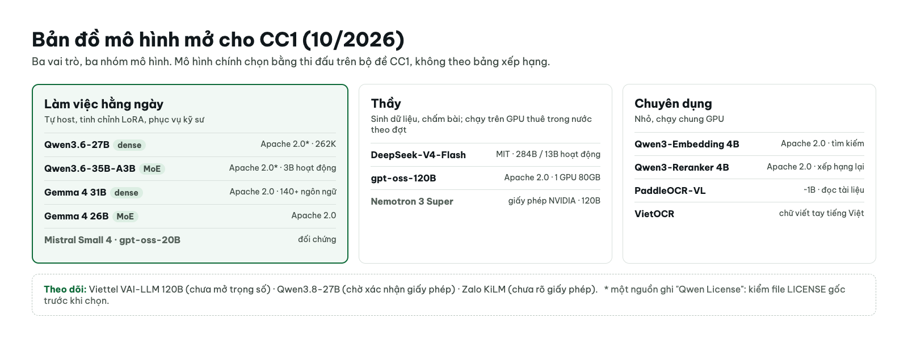
| Mô hình | Kiểu | Giấy phép | Vai trò |
|---|---|---|---|
| Qwen3.6-27B | Dense 27B, ngữ cảnh 262K | Apache 2.0 (kiểm lại: một nguồn ghi Qwen License) | Ứng viên chính; dense nên dễ tinh chỉnh LoRA |
| Qwen3.6-35B-A3B | MoE, khoảng 3B hoạt động | Apache 2.0 (kiểm lại) | Ứng viên; suy luận rẻ |
| Gemma 4 31B | Dense 31B, hơn 140 ngôn ngữ | Apache 2.0 | Ứng viên chính |
| Gemma 4 26B | MoE | Apache 2.0 | Ứng viên |
| Mistral Small 4 · gpt-oss-20B | — | Apache 2.0 | Đối chứng |
| DeepSeek-V4-Flash | MoE 284B / 13B hoạt động, ngữ cảnh 1M | MIT | Thầy: sinh dữ liệu, chấm bài |
| Qwen3-Embedding · Qwen3-Reranker 4B | Hơn 100 ngôn ngữ, có tiếng Việt | Apache 2.0 | Tìm kiếm, xếp hạng lại |
| PaddleOCR-VL · VietOCR | Khoảng 1B · nhận dạng dòng | Apache 2.0 | Đọc tài liệu · chữ viết tay |
| Viettel VAI-LLM 120B | Nền Nemotron 3 Super | Chưa mở trọng số | Theo dõi |
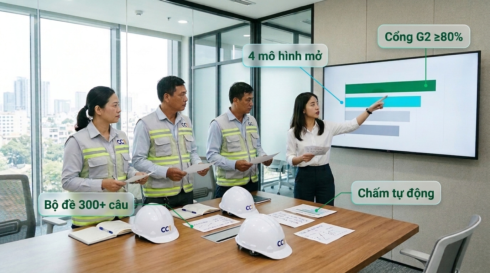
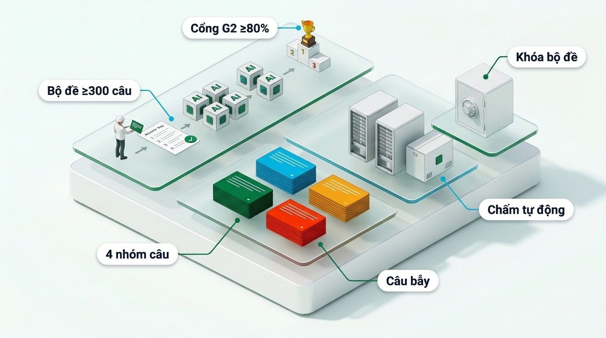
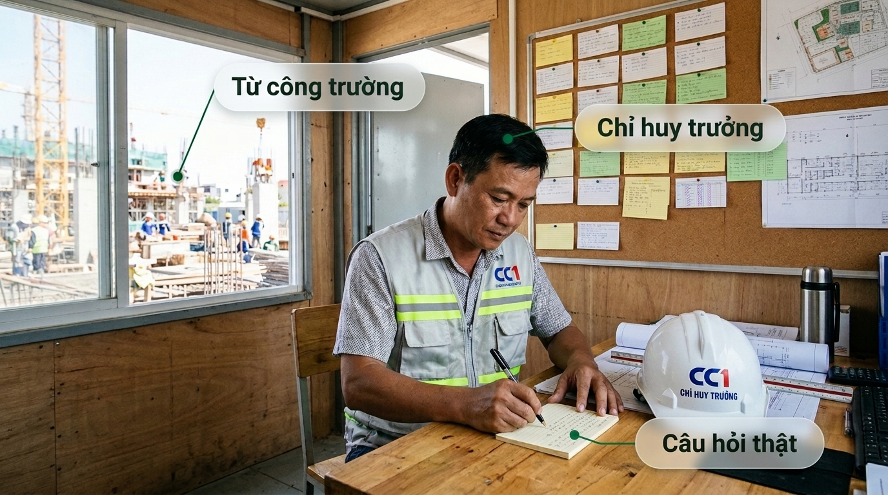
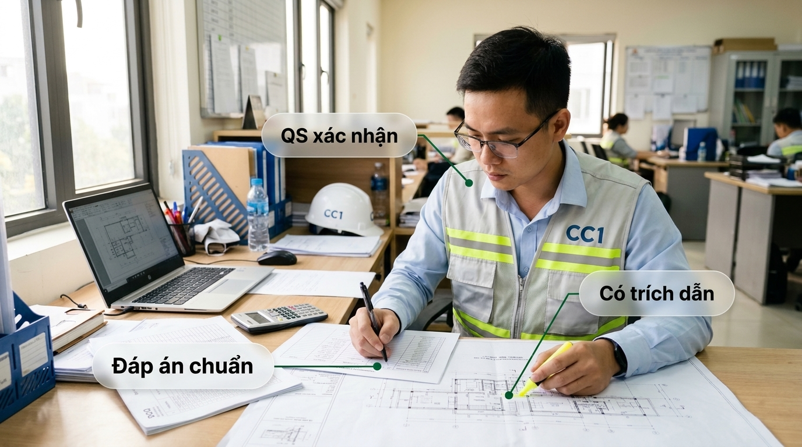
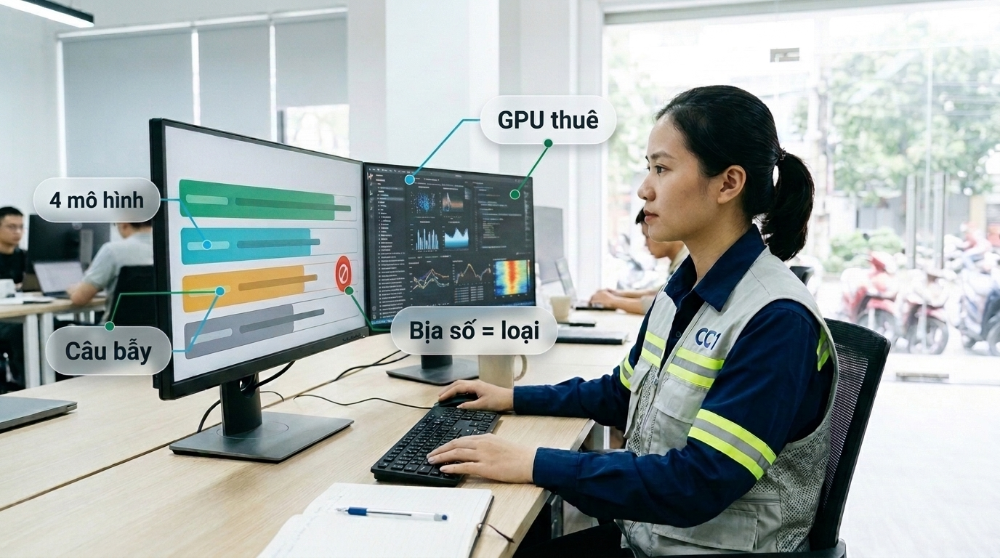
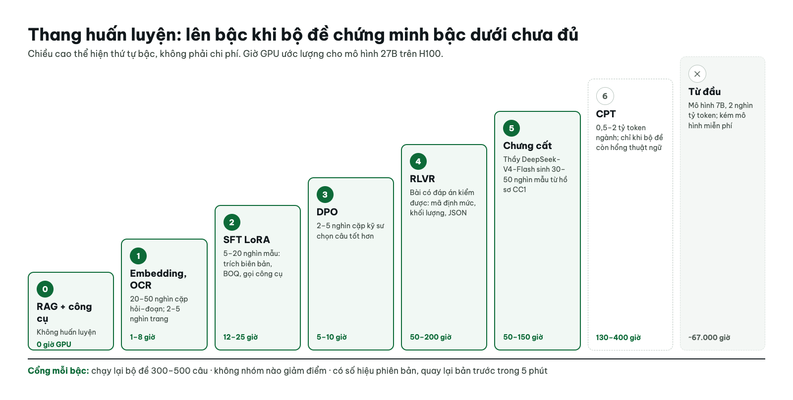
| Cách | Dữ liệu | Dạy mô hình điều gì | Công cụ |
|---|---|---|---|
| Embedding + reranker | 20–50 nghìn cặp hỏi ↔ đoạn hồ sơ | Tìm đúng đoạn TCVN, BOQ, biên bản | Sentence-Transformers |
| OCR | 2–5 nghìn trang CC1 đã gán nhãn | Đọc đúng phiếu cân, biên bản, viết tay | PaddleOCR, VietOCR |
| SFT LoRA/QLoRA | 5–20 nghìn mẫu hướng dẫn | Định dạng, thuật ngữ, gọi công cụ | Unsloth, LLaMA-Factory, TRL |
| DPO | 2–5 nghìn cặp kỹ sư chọn | Văn phong, thận trọng, trích dẫn | TRL |
| RLVR (GRPO) | Bài có đáp án kiểm được bằng máy | Mã định mức, phép tính khối lượng, JSON | TRL, verl |
| Chưng cất | Thầy sinh 30–50 nghìn mẫu, kỹ sư lọc | Kiến thức ngành dạng hỏi–đáp | vLLM + SFT |
| CPT (có điều kiện) | 0,5–2 tỷ token ngành + 20–30% dữ liệu chung | Thuật ngữ ở tầng sâu | NeMo, Megatron |
RLVR hợp ngành xây dựng vì phần lớn đáp án kiểm được bằng máy. Khi phục vụ: một mô hình nền, mỗi tác vụ một LoRA; vLLM nạp adapter theo yêu cầu.
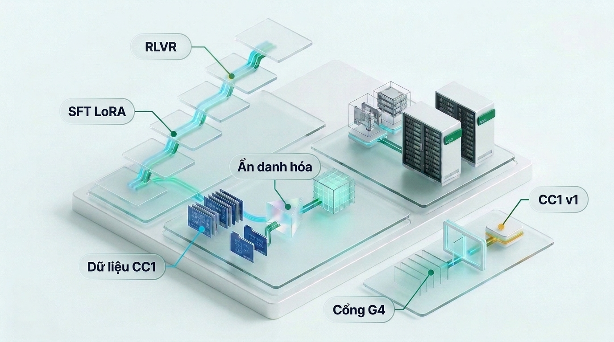
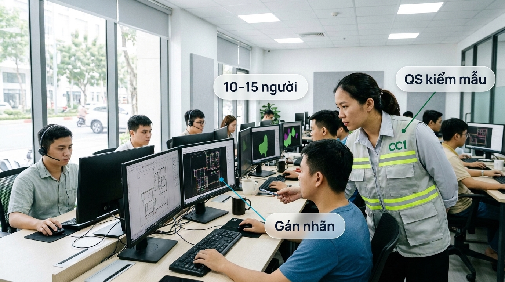
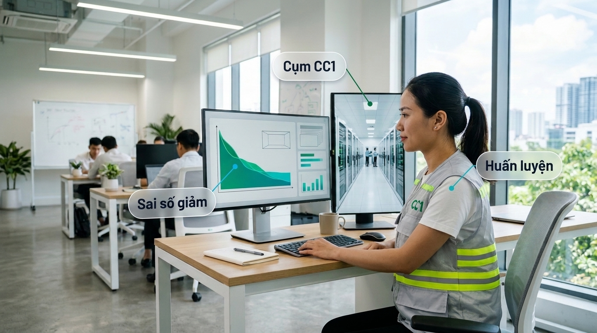
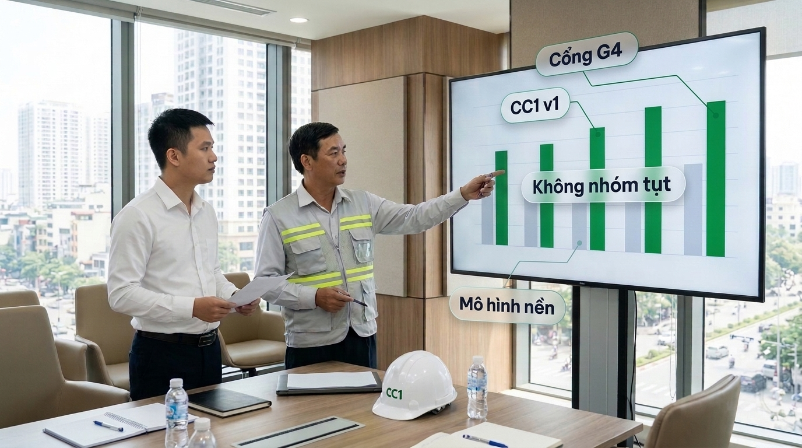
| Việc | Giờ GPU H100 | Thời gian thực (8× H100) | Chi phí thuê |
|---|---|---|---|
| Tinh chỉnh embedding | 1–4 | < 1 giờ | < 15 USD |
| Tinh chỉnh OCR | 2–8 | < 1 giờ | < 25 USD |
| DPO | 5–10 | 1–2 giờ | < 30 USD |
| SFT LoRA 27B | 12–25 | 2–3 giờ | 30–75 USD |
| RLVR 27B | 50–200 | 1–2 ngày | 130–600 USD |
| Sinh dữ liệu chưng cất (4× H200) | 50–150 | 1–2 ngày | 150–600 USD |
| CPT 1 tỷ token | 130–200 | 16–25 giờ | 330–600 USD |
| CPT 2 tỷ token | 260–400 | 1,5–2 ngày | 660–1.200 USD |
| Từ đầu 7B, 2 nghìn tỷ token | ~67.000 | ~350 ngày / 1 node | 170.000–200.000 USD |
Ước lượng: khối lượng tính ≈ 6 × tham số × token; H100 hiệu dụng khoảng 350 TFLOPS; giá thuê H100 tại FPT AI Factory 2,54–2,99 USD/giờ. Ví dụ SFT 27B: 90 triệu token → 1,46×10¹⁹ phép tính ≈ 12 giờ GPU. Mỗi việc chạy 5–10 lần thử.
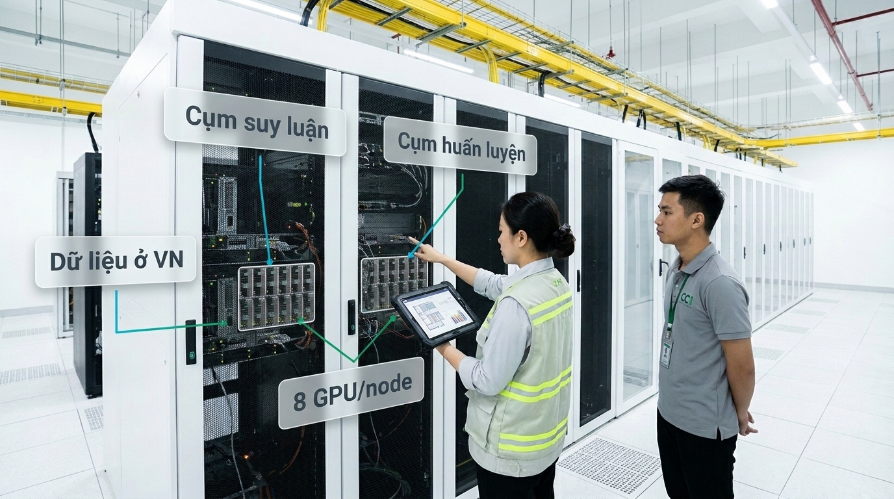
| Huấn luyện | Cấu hình |
|---|---|
| SFT, RLVR, CPT, sinh dữ liệu | Thuê node 8× H100/H200 tại FPT AI Factory hoặc Viettel Cloud AI-Native |
| Thử nhanh, embedding, OCR, bộ đề | 1 máy trạm nội bộ 2–4 GPU 48–96 GB (cần báo giá) |
| QLoRA 32B | Tối thiểu khoảng 26 GB (Unsloth) |
| LoRA 32B | Tối thiểu khoảng 76 GB (Unsloth) |
| CPT toàn tham số 27B | Khoảng 430 GB → 8× H100 với FSDP/ZeRO-3 |
| Suy luận nội bộ | Bộ nhớ (FP8) · GPU |
|---|---|
| 27–31B dense | 27–31 GB · 2× GPU 48 GB |
| 35B-A3B MoE | ~36 GB · 2× GPU 48 GB |
| Embedding + reranker 4B | ~8 GB · dùng chung |
| OCR ~1B | 2–4 GB · dùng chung |
| Thầy DeepSeek-V4-Flash | ~300 GB · thuê 4× H200 theo đợt |
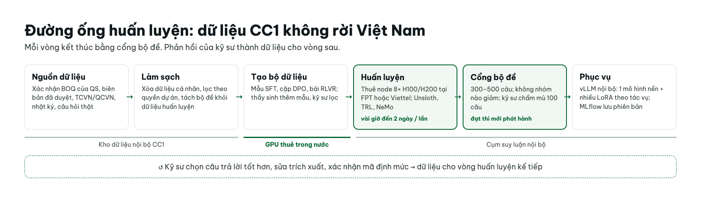
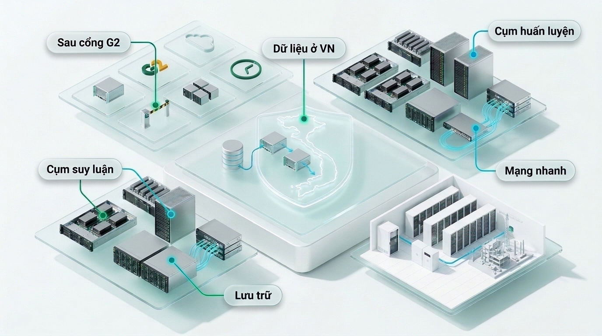
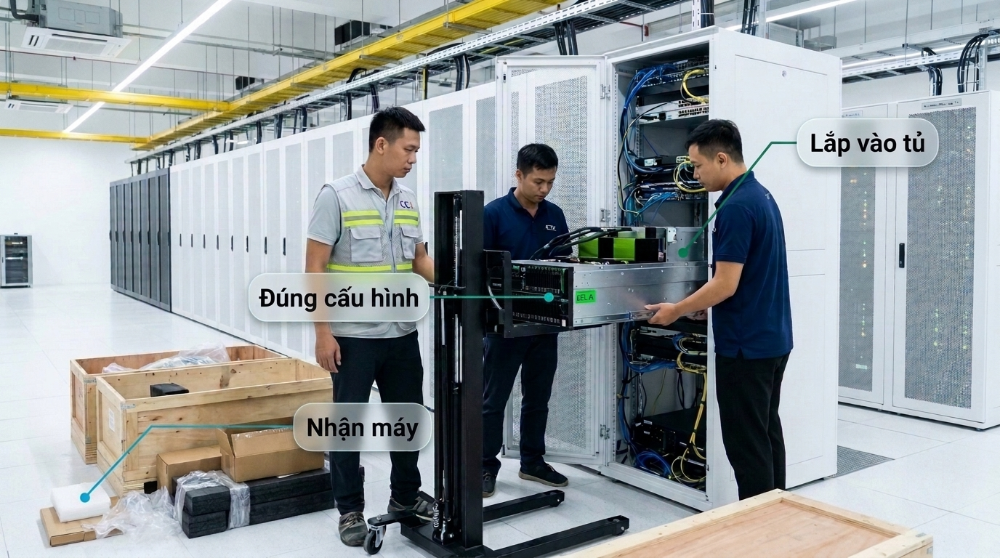
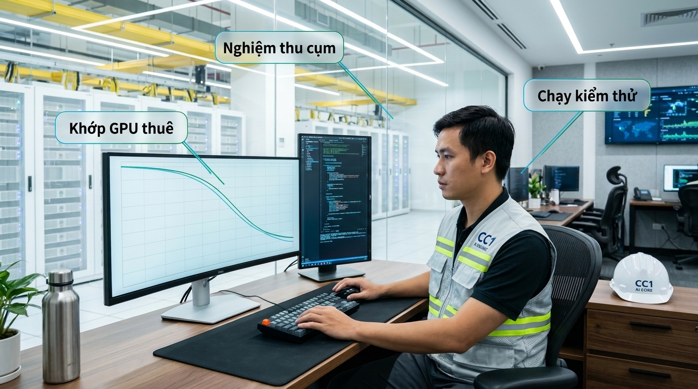
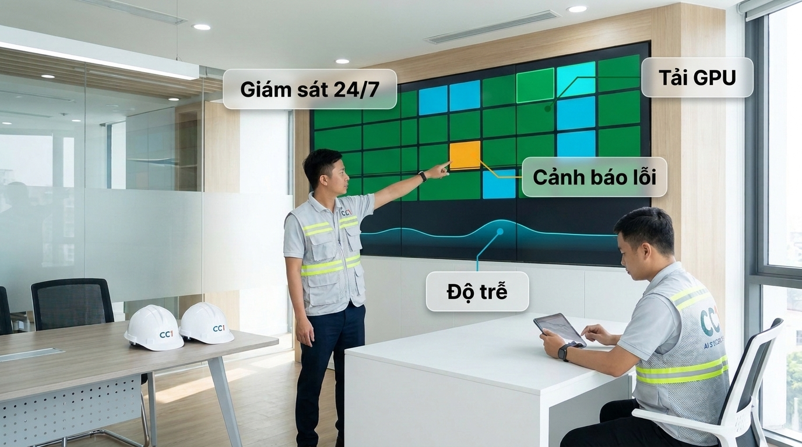
Hai mô hình công trường của CC1: tuyến giao thông dài hàng chục km và công trường có tường rào.
Áp dụng cho: cao tốc, cầu, vành đai.
Áp dụng cho: nhà ga, dân dụng, công nghiệp.
Bấm một ảnh để xem cạnh bản vẽ của nó. Gồm 16 điểm chạm khép kín (1.1–4.2) và 8 điểm chạm tuyến (L1–L8).
Mỗi hàng ghép ảnh hiện trường với bản vẽ của điểm chạm đó; tuyến L1–L8 dùng chung một bản vẽ tuyến.
Nghiệm thu biển báo, rào chắn đầu ca (thiếu biển thì khóa ca); chỉ huy cấp giấy phép theo đoạn Km.
QCVN 41:2024Tọa độ GPS
Quét QR/NFCGeofence Km 8+200–9+000Ngoại tuyến 100%
Cân một lần tại mỏ hoặc trạm trộn, không nhận phiếu trên làn xe; camera AI quét ngược dòng để báo công nhân.
Cân 18.4 tấnTự ghi giờ đổ
Ngược dòng 250mCòi, vòng rung≤ 6 giây
Chỉ ra đoạn đã giao mặt bằng nhưng thiếu máy; giám sát nhiệt thảm nhựa và độ chặt nền.
Trục LandXMLĐoạn thiếu máyTừng lớp nền
Nhiệt 145°CĐộ chặt K98Xe bán tải LiDAR
Thẻ GNSS báo động khi người làm đơn độc bất động; cầu đúc hẫng quét 3D đốt dầm, đo độ chín bê tông.
Bất động 180sSolar LoRa/4G
Đốt dầm 0.3mmĐộ chín 42 MPaRút ngắn 5 ngày
Chia tuyến dài thành chuỗi nút kín, nối bằng hành lang mở theo lý trình.
Nút (node)Hành lang (corridor)Lý trình Km+m
Máy chủ biên xử lý dưới 10ms, chạy độc lập khi đứt cáp quang, nhẹ hơn avatar 3D tĩnh 1.000 lần.
Avatar lỗi 45%Khung xương chuẩn
Cảm biếnMạng và RTKMáy chủ biênĐám mây CC1
Thiếu mũ hoặc áo phản quang thì cổng tự khóa.
Mở cổng 1.5sFace ID + PPE
Quy trình mở cổngAI khuôn mặtThép SUS304 IP65PoE+ và UPS
Tận dụng 100% camera CCTV sẵn có.
Cảnh báo < 1sThiếu dây đai
Giám sát 24/7Lọc báo giả 3sTrụ camera AISóng CPE 5GHz
Khớp tọa độ VN2000; tự bóc phần trăm khối lượng hoàn thành và sai lệch kết cấu.
Sai số < 1.5cmĐám mây điểm 3D
Bay tự độngKhớp BIM 4DDrone LiDARTrạm RTK < 1cm
Thay sổ ghi tay; kiểm soát tuổi bê tông tươi dưới 90 phút; camera đỉnh soi thùng xe rỗng khi ra.
Biển số 99.4%Rửa lốp sạch
Quét xe ra vàoAI đọc biển sốCổng và rửa lốpLưu điện UPS
Công nhân bịt mặt hoặc nhìn từ drone thì nhận diện khuôn mặt gần như không dùng được; thay bằng khung xương 3D, dáng đi, chip mũ.
07:00, 1.5s17 khớp xươngVector 4KB/người
Liên cameraCự ly 30x80px
Độ cao 50mChip mũ UWB 8gChống tráo 100%
Quét cổng 3DDáng điChip mũ UWB 8gChống tráo mũ
Quét cổng 07:00Đồng bộ biênTheo vết 3DChấm công 17:00
Đối chiếu khối lượng cân với thể tích LiDAR (24.5 m³) để chặn gian lận bơm nước vào cát đá.
Quét 3DĐếm bó thép
Cân và quét 3DĐo thể tíchCổng LiDARKhớp kho ERP
Máy toàn đạc khóa laser 50Hz dẫn robot in tường, hốc cửa, lỗ mở cơ điện, nhanh gấp 8 lần búng mực tay.
Sai số < 1.5mm
Nạp bản vẽ BIMKhóa tia laserRobot in sàn
Hai ăng ten RTK và 4 cảm biến góc nghiêng IMU (IP69K) định vị mũi răng gầu ±15mm trên màn hình cabin.
Khóa van thủy lựcBán tự động
Nạp mặt cắt 3DĐịnh vị RTKIMU trên cần
Quét mốc tầng trong 5 giây, chồng mô hình BIM 3D lên trần bê tông thô trước khi đóng trần.
Khớp 1:1Lệch ống 45mm
Quét mốc tầngChồng khớp 3DMáy tính bảngĐồng bộ BIM
Robot leo cầu thang, quét độ phẳng sàn và nhiệt PCCC ban đêm; khung xương giảm 70% tải lên cột sống L4/L5.
Ca đêm 22:00
Bảo vệ đốt sốngNăng suất gấp đôi
Robot tuần đêmQuét LiDAR 3DKhung trợ lực
Xe lu tự hành gắn radar 77GHz xuyên bụi, đo độ chặt nền K98; cẩu tháp AI giảm 85% biên độ lắc cáp.
Không người lái
LiDAR móc cẩuTự né giàn giáo
Đội xe tự hànhĐầm nénCẩu tháp AIKhử lắc
4 tác tử AI điều phối công trường trong 3 giây; kính AR nghiệm thu 17:00, giải ngân 17:02; robot hàn cắt mô đun MEP tại chỗ.
Bản sao số 3D
LiDAR khớp mm
Rảnh tayNghiệm thu 3D
Đa tác tử AIXưởng containerKính ARHợp đồng số
Nền tảng chung cho toàn tập đoàn, nạp dữ liệu theo đợt. Bản đầy đủ: Phần VII, Lõi vận hành AI.
CC1 có ngân sách. Khi tiền không còn là ràng buộc, ràng buộc thật là dữ liệu sẵn sàng, người giỏi và thời gian. Phân tích đầy đủ: phương án A và B. Mọi số tiền là ước lượng thô, phải có báo giá trước khi trình duyệt ngân sách.
| Tiêu chí | A · Tinh gọn | B · Đầu tư mạnh |
|---|---|---|
| Phủ toàn tập đoàn | 2–3 năm | 6–9 tháng (dưới 30 dự án) |
| Chi phí 3 năm | 17–35 tỷ | 105–180 tỷ |
| Phần cứng | ~2 tỷ: 1 cụm suy luận | ~30–44 tỷ: 2 node Blackwell + 2 node suy luận |
| Đội ngũ | 8–9 người | 18–22 người + 10–15 gán nhãn |
| Kiểm soát dữ liệu | Tốt (trong nước) | Tối đa (trong hạ tầng CC1) |
| Lặp huấn luyện | Theo đợt thuê | Hằng tuần |
| Mô hình ngành riêng | Có thể, chậm | Có, từ tháng 6 |
| Rủi ro tuyển người | Thấp | Cao |
| Rủi ro lãng phí phần cứng | Thấp | Trung bình đến cao |
| Mốc | Việc | Cổng để đi tiếp |
|---|---|---|
| Tháng 0 | Phê duyệt B; tuyển trưởng nhóm nghiên cứu và 6–8 người đầu; mua cụm suy luận | — |
| Tháng 0–3 | Thuê GPU trong nước: thi đấu mô hình, SFT v1, đo dữ liệu thật; lấy báo giá cụm huấn luyện và chỗ đặt | Bộ đề đạt mốc; đủ dữ liệu; đã tuyển ≥ 10 người |
| Tháng 3–4 | Cổng mua sắm: đặt hàng cụm huấn luyện | Cả 3 điều kiện trên |
| Tháng 6–8 | Cụm huấn luyện vận hành; CPT mô hình ngành CC1, chưng cất quy mô lớn | Nghiệm thu cụm |
| Tháng 1–9 | Nạp 10–15 dự án mỗi quý, phủ dưới 30 dự án; số hóa hồ sơ cũ từ tháng 5 | Không rò rỉ giữa dự án; kỹ sư dùng hằng ngày |
| Vấn đề | Đã chốt (31/10/2026): phương án B theo cổng |
|---|---|
| Quy mô | Toàn tập đoàn, dưới 30 dự án đang thi công; nạp 10–15 dự án mỗi quý, phủ hết trong khoảng 6–9 tháng |
| Hạ tầng | Mua cụm suy luận ngay; thuê GPU trong nước 3 tháng đầu; đặt mua cụm huấn luyện tại cổng G2 (M3–M4); đặt máy tại trung tâm dữ liệu thuê (Viettel IDC hoặc FPT) |
| Đội ngũ | 18–22 người + 10–15 người gán nhãn; QS từng dự án kiêm nhiệm xác nhận ánh xạ BOQ |
| Đo đạc | Thiết bị thương mại đã kiểm định; khảo sát và báo giá cả danh sách cùng lúc |
| Dự án mẫu đợt 1 | 1 dự án khép kín có BIM + 1 dự án tuyến (chưa gắn tên) |
M0 là tháng phê duyệt. Kế hoạch đầy đủ, mỗi giai đoạn có việc, sản phẩm, nghiệm thu, ngân sách và phương án lùi: plan.md.
| # | Giai đoạn | Thời gian | Ngân sách |
|---|---|---|---|
| 0 | Phê duyệt, quản trị, pháp lý | M0–M1 | 1–2 tỷ |
| 1 | Tuyển đội 18–22 người | M0–M6 | 14–24 tỷ/năm |
| 2 | Cụm suy luận, chỗ đặt | M0–M2 | 5–8 tỷ máy + 3–6 tỷ chỗ đặt |
| 3 | Nền dữ liệu, ontology v0 | M0–M4 | 1–3 tỷ lưu trữ |
| 4 | Bộ đề, thi đấu mô hình | M0–M3 | < 0,5 tỷ thuê GPU |
| 5 | OCR, ánh xạ BOQ, nạp dự án | M1–M9 | 3–6 tỷ gán nhãn |
| 6 | Cổng mua sắm, cụm huấn luyện | M3–M8 | 25–36 tỷ (sau G2) |
| 7 | Huấn luyện mô hình | M2–M12 | Trong cụm giai đoạn 6 |
| 8 | Tác tử, tích hợp Site OS, ERP | M4–M12 | Trong chi phí đội |
| 9 | Số hóa hồ sơ cũ | M5–M15 | 3–6 tỷ năm 1 |
| 10 | Vận hành, KPI, đánh giá năm | M6–M24 | 4–6 tỷ/năm chỗ đặt từ năm 2 |
| Cổng | Điều kiện đạt | Không đạt thì |
|---|---|---|
| G1 · M1 | Ngân sách duyệt; ban chỉ đạo lập; có trưởng nhóm nghiên cứu | Lùi M0, không ký mua sắm |
| G2 · M3–M4 | Bộ đề ≥ 80% nhóm tra cứu; ≥ 50 nghìn mẫu huấn luyện; ≥ 10 người | Dừng ở A+: giữ cụm suy luận, thuê GPU, xét lại sau 3 tháng |
| G3 · M8 | 3 tháng chỉ đọc không sự cố; nhật ký kiểm toán đủ | Giữ chế độ chỉ đọc |
| G4 · M10 | Mô hình ngành CC1 v1 thắng mô hình nền; không nhóm nào giảm | Phục vụ mô hình nền + LoRA |
| G5 · M12 | Đạt 6 kết quả năm 1 | Thu hẹp phạm vi năm 2 |
Chưa cộng vào 55–90 tỷ năm 1 và 105–180 tỷ 3 năm; tổng sẽ tăng khi có báo giá. Giá lấy từ đặc tả chi tiết từng thành phần, quy đổi khoảng 26.000 đ/USD và 28.000 đ/EUR, chưa gồm thuế nhập khẩu, VAT, vận chuyển, lắp đặt.
| Bộ | Phần đã có giá | Còn chưa xác minh |
|---|---|---|
| Công trường khép kín khoảng 1 ha (mỗi dự án) | khoảng 0,38 tỷ: 1 máy quét fi-8190, 4 máy tính bảng, 1 Jetson AGX Orin (giá bộ phát triển), 2 máy nhận mặt, 1 thuê bao VNGEONET | 8 camera AI, 1 PTZ, khoảng 16 neo UWB và thẻ, cổng xoay, làn ANPR và barie, hộp Jetson công nghiệp |
| Đoạn tuyến khoảng 10 km | khoảng 1,3–2,6 tỷ: 1 máy quét, 2 máy tính bảng, 1 Jetson, 2 máy nhận mặt, 1–2 thuê bao VNGEONET, 2–4 trailer camera năng lượng mặt trời (chưa gồm camera) | Camera, khoảng 15 thiết bị cho người làm việc đơn độc, ANPR |
| Dùng chung tại trụ sở hoặc luân chuyển (một bộ) | khoảng 4,2–4,3 tỷ: máy quét A3, máy quét sách, máy quét bản vẽ A0, drone RTK, drone LiDAR, 2 máy quét laser, phần mềm ghép ảnh | Máy quét hầm, cân xe, máy quét thùng xe |
| Dẫn hướng máy 3D (chỉ dự án tuyến mẫu) | khoảng 1,2–2,1 tỷ mỗi máy | Số máy cần trang bị |
| Tuần | Việc | Cổng chất lượng |
|---|---|---|
| 0–4 | Bộ đề, thi đấu mô hình, chọn nền | 1 mô hình chính + 1 dự phòng |
| 4–8 | Tinh chỉnh embedding, reranker, OCR phiếu cân | Truy xuất top-5 tăng; OCR đạt ngưỡng đợt 1 |
| 8–14 | SFT LoRA v1 (trích biên bản, gọi công cụ); DPO từ phản hồi kỹ sư | JSON hợp lệ ≥ 99%; không nhóm nào giảm điểm |
| 14–20 | RLVR cho ánh xạ BOQ và phép tính khối lượng; chưng cất từ thầy | Đúng mã định mức top-3 tăng rõ |
| Tháng 6+ | Quyết định CPT nếu bộ đề còn hổng thuật ngữ | Chỉ chạy khi có bằng chứng |
| Bước | Công |
|---|---|
| Thu hồ sơ, BIM, BOQ; kiểm bảng mã cũ | 2–3 ngày |
| Gắn dự án vào ontology: phân khu hoặc đoạn Km, WBS | 2–3 ngày |
| Ánh xạ BOQ: máy gợi ý, QS dự án xác nhận | 2–4 ngày / 2.000 dòng |
| Nối điểm chạm đang chạy | 1–2 ngày |
| Bổ sung 30–50 câu bộ đề riêng | 1 ngày |
| Chạy bộ đề, kiểm thử rò rỉ, bàn giao | 1–2 ngày |
| Tiêu chí dự án mẫu | Khép kín | Tuyến |
|---|---|---|
| Dữ liệu số | BIM xuất IFC, BOQ Excel | Tim tuyến LandXML, BOQ Excel |
| Giai đoạn | Đang thi công phần thân, còn ít nhất 12 tháng thi công | Đang thi công nền hoặc cầu, còn ít nhất 12 tháng thi công |
| Điểm chạm quý đầu | 1.1–1.4 | L1–L3, L8 |
| Con người | Chỉ huy trưởng, QS viết bộ đề | Như bên cạnh |
| Vai trò | Số người |
|---|---|
| Trưởng nhóm nghiên cứu AI | 1–2 |
| Kỹ sư ML / LLM | 4 |
| Kỹ sư dữ liệu | 4 |
| Kỹ sư tri thức ngành (kỹ sư xây dựng) | 4 |
| MLOps / vận hành cụm GPU | 2–3 |
| Quản lý sản phẩm | 1–2 |
| Bảo mật, pháp chế | 1 |
| Gán nhãn (kiêm nhiệm hoặc thuê ngoài) | 10–15 |
Ước lượng cấp độ, sai số có thể ±50%. Cần báo giá máy chủ, bảng lương và báo giá phần mềm trước khi trình. Chưa gồm thiết bị điểm chạm tại công trường.
| Hạng mục | Năm 1 | Năm 2 | Năm 3 |
|---|---|---|---|
| Đội lõi 8–9 người | 4,5–7,5 tỷ | 4,5–7,5 tỷ | 4,5–7,5 tỷ |
| Cụm suy luận nội bộ | 1,5–2,5 tỷ | 0–2,5 tỷ | Bảo trì |
| Lưu trữ | 0,5–1,5 tỷ | 0,3–1 tỷ | 0,3–1 tỷ |
| Thuê GPU huấn luyện | < 0,3 tỷ | < 0,5 tỷ | < 0,5 tỷ |
| API thương mại | 0,1–0,3 tỷ | 0,2–0,5 tỷ | 0,2–0,5 tỷ |
| Pháp lý dữ liệu, AI; kiểm thử bảo mật | 0,3–0,6 tỷ | 0,2–0,4 tỷ | 0,2–0,4 tỷ |
| Cộng (làm tròn) | 7–13 tỷ | 5–12 tỷ | 5–10 tỷ |
Con người chiếm khoảng 60–80%. Một lần tinh chỉnh LoRA trên 8 GPU H100 trong 3 ngày khoảng 1.500 USD (giá thuê tại FPT AI Factory).
| Phép đo | Nhóm sản phẩm |
|---|---|
| Cân xe | Đầu cân, cầu cân đã kiểm định (Mettler Toledo và hãng tương đương) |
| Thể tích thùng xe | Máy quét thể tích tải (ví dụ Loadscan) |
| Drone đo vẽ | DJI Matrice + LiDAR Zenmuse; DJI Terra hoặc Pix4D |
| Quét và so BIM | Leica, Trimble, Faro |
| Bóc khối lượng bản vẽ | Autodesk Takeoff, CostX, Bluebeam |
| Dẫn hướng máy | Trimble Earthworks, Leica iCON, Topcon |
| Lu thông minh | Hệ thống của hãng lu (Bomag, Hamm, Caterpillar) |
| Độ chín bê tông | Giatec SmartRock, Converge |
| Định vị UWB | Pozyx, Sewio và hãng tương đương |
Điều kiện loại: thiết bị không xuất dữ liệu mở (API, IFC, LAS/E57, LandXML, CSV) thì không nối được vào lõi.
| Rủi ro | Cách chặn |
|---|---|
| Mô hình bịa số liệu | Số liệu chỉ qua truy vấn; trích dẫn bắt buộc; bộ đề có câu bẫy |
| Rò rỉ giữa dự án, nhà thầu | Lọc quyền trước truy xuất; kiểm thử rò rỉ mỗi đợt nạp |
| Khóa vào hãng thiết bị hoặc mô hình | Bắt buộc xuất dữ liệu mở; bộ đề làm thước đo khi đổi |
| Mua GPU trước khi có tải thật | Thuê trước, mua khi đã đo tải |
| Công nhân không tin hệ thống | Không tự động xử phạt; theo dõi tỷ lệ cờ sai |